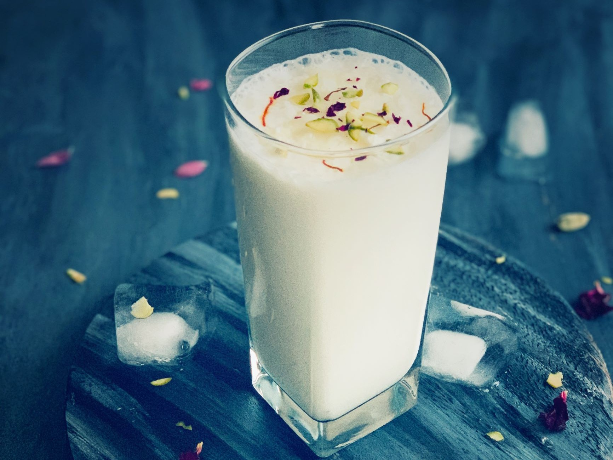

Lassi

Description
Lassi is a cooling, refreshing, probiotic drink perfect for the warm summer months. Popular in Punjab and North
India, there are many variations of a lassi recipe, including mango lassi, dry fruits lassi, and malai lassi.
Ingredients
- 1 cup curd (thick)
- 2 tbsp pistachios
- 2 tbsp almonds
- 1 anjeer (chopped)
- 2 tbsp sugar
- ¼ tsp saffron food colour
Steps
- firstly, in a blender take 1 cup curd. make sure the curd is thick and chilled.
- add 2 tbsp pistachios, 2 tbsp almonds, 1 anjeer, 2 tbsp sugar and ¼ tsp saffron food colour.
- blend to make sure everything is well combined.
- finally, pour dry fruit lassi in a tall glass and top with chopped pistachios.